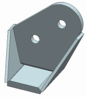
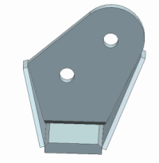
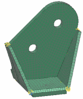

Generate a hexahedral mesh on a bracket
One way to prepare for swept meshing is to split bodies into smaller entities that can be easily meshed. This analysis workflow is as follows:
-
Begin with a solid-based CAD assembly, either created in NX or imported into NX.

-
Edit or generate CAD data for analysis.
-
Use the WAVE Geometry Linker to copy the geometry from components in the assembly into the work part.
-
Use Synchronous Modeling and other Modeling tools to simplify the components in the assembly.

-
-
Split the components into smaller bodies that can be used for swept meshing.

-
In Advanced Simulation, create a FEM.
-
Generate mesh mating conditions.
-
Apply edge densities to control the number of elements through the thickness of the components.
-
Create mapped meshes as seed meshes to control the number of elements in the swept mesh.
-
Generate swept meshes on the bodies in the assembly. The swept mesh generates hexahedral elements.
